Cellular
Why Study Cellular?
Wireless mobile connectivity is the modern standard. Your phone is be able to connect to the Internet while you’re in a moving car.
Traditional Internet networks can’t support this. You might be able to move from your bedroom to your kitchen and still have Internet access. In that case, you’re within range of your wireless home router, which is then connected via wires to the rest of the Internet. However, the traditional Internet doesn’t offer seamless connections across wide distances (e.g. moving in a car).
There are many ways to implement wireless mobile connectivity, but cellular is the dominant access technology today. Over half of web traffic today originates from a cellular device!
Cellular is just one of many technologies that can offer mobile wireless connectivity. Other technologies like satellite or free-space optics also exist, though cellular networks are still the dominant approach today.
In the future, high-performance applications that require wireless mobile technology, like self-driving cars or virtual reality, could lead to more innovation. Current cellular networks might get prohibitively expensive as we try to scale them up to support future applications. Also, cellular network operators like AT&T and Verizon don’t have a reputation for rapid innovation. The general consensus is that this is an area ripe for disruption in the near future, and is an active area of research.
Brief History of Cellular Networks
Cellular technology has its roots in the old telephone system. Cellular networks were first developed to allow users to make phone calls wirelessly, instead of on a wired landline. The first mobile phone was sold in 1983 for $4,000 (way more today, after inflation).
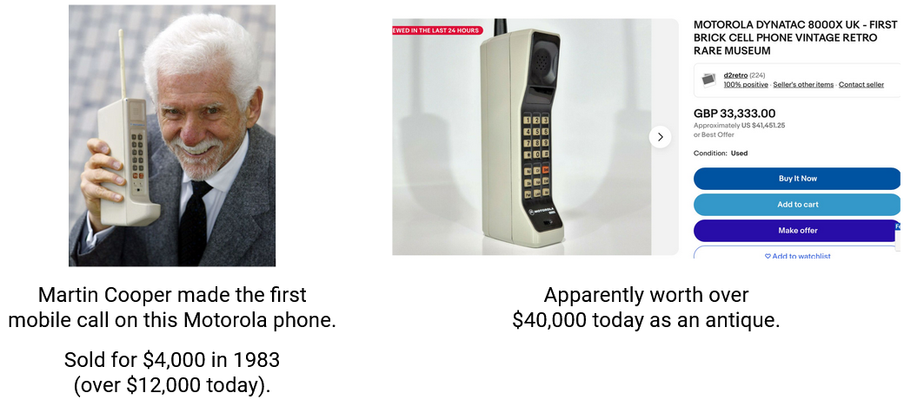
Because cellular technology was derived from the telephone network (not the Internet), many of the design choices differ from the traditional Internet. For many years, cellular technology (e.g. pre-smartphone cell phones for voice calls) and the Internet developed in parallel, each with a different set of architectural choices.
For example, the cellular network uses resource reservations, while the modern Internet uses packet switching. Cellular networks often thinks in terms of individual users, while the Internet mostly thinks in terms of individual flows or packets. The business model of cellular networks (e.g. charge user by the minute) is different from the Internet, which generally doesn’t keep track of usage as much.
In recent years, cellular networks have emerged to be more compatible with the traditional Internet. Today, you can think of a cellular network as a specialized Layer 2 local network that can interact with the rest of the traditional TCP/IP Internet.
Cellular Standards
In the traditional Internet, we saw that standards bodies help us standardize protocols like TCP and IP. The cellular network also has many standards bodies that cooperate to generate a standard.
In some ways, the cellular network standards bodies have more real-life political complexity than the Internet standards bodies. In order to aciheve interoperability, all manufacturers of cell phones, and all network operators (e.g. Verizon building cell towers), need to agree on protocols, all the way down to the physical layer.
The key standards body in the cellular world is the 3GPP (3rd Generation Partnership Project). The large equipment vendors and telecommunications companies all participate in this organization. The 3GPP proposes standards, which are then forwarded to the ITU (International Telecom Union). The ITU is part of the United Nations, and every country gets a vote, so there’s some politics involved in standards as well. (Fun fact: Every country gets one vote, so the US can get out-voted by the European Union.)
Typically, a new technology generation is introduced every 10 years. Now you know what the numbers in 2G, 3G, 4G, and 5G represent (generations of cellular technology). The 5G network was defined around 2020, and operators are still working on deploying the technology. Planning for the 6G standard will start in the next few years (late 2020s).
Each generation tries to improve on the previous generation along multiple dimensions, including peak theoretical data rate, average data rate experienced by users, mobility (connection while user is traveling at a high speed), connection density (number of devices within a specific area), and so on. Each generation usually operates around 10 times better than the previous generation, along all these dimensions.
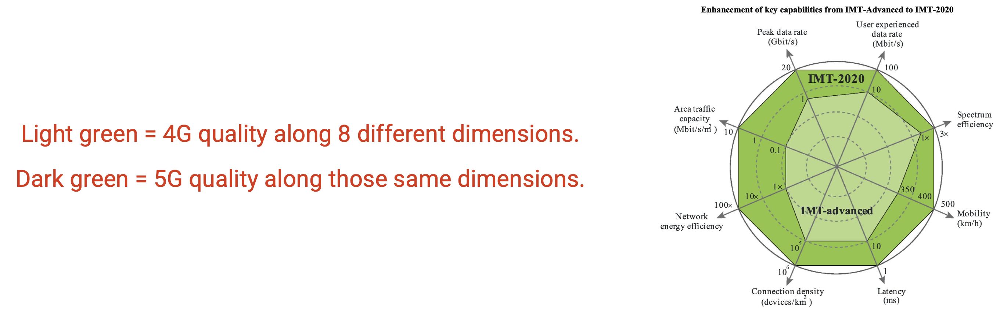
In addition to performance improvements, the architectural design has also evolved across generations, to move away from the telephone network design and towards the Internet design. 1G phones were purely analog, designed for voice calls. 2G/3G was still mostly circuit-switched, with a focus on voice traffic (a bit of texting, barely any Internet traffic). From 4G onwards, we’ve moved to a packet-switched architecture, and voice is now just one of many applications running over the network.
Cellular specifications are thousands of pages and include hundreds of documents, and pretty much no one actually reads them in full. One inconvenient feature of these standards is that everything gets renamed when we move from one generation to the next. For example, cellular towers have been called a “base station”, “nodeB”, “evolved NodeB (eNodeB)”, and a “next-gen Node B (gNB),” all meaning the same thing. In this class, we’ll invent our own terminology to make the names more intuitive. If you look through a textbook or a specification, you might see different names, but the ideas we’ll see should generally be conceptually consistent with textbooks and specs.
Key Challenge: Mobility
The key challenge that makes cellular networks hard is mobility. Remember, think of mobility as your phone playing a video as you’re moving down the freeway (don’t watch videos while driving though). There are four fundamental challenges that we’ll study:
-
Discovery: As I’m moving, how do I know which cell tower to connect to?
-
Authentication: The AT&T tower may only offer want to offer connectivity to its own customers, but not other customers. How does the cell tower achieve this?
-
Seamless communication: If I move out of range of one tower, and into the range of a different cell tower, my connection should be seamless, with no disruption.
-
Accountability: If the customer only paid for 6GB of data, the network should stop offering the customer connectivity (or offer worse connectivity) after the customer has exceeded their limit. This requirement comes from the old cellular network (pay per minute of a voice call), and still exists because resources in cellular networks are scarce.
Infrastructure Components: Radio Towers
What are the components of a cellular network? First, there’s the radio tower.
The radio tower has an antenna. Inside the tower is a radio transceiver, which converts digital bits to analog signals sent over the air interface.
Also inside the tower is a radio controller, which decides how to allocate radio resources.
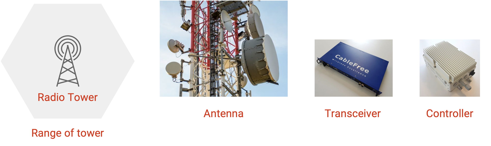
You can think of the controller like a CPU running a scheduler. The controller allocates different segments of frequency and time to different customers, depending on demand and business model (e.g. how much the customer is paying). This is actually a pretty difficult scheduling problem, though we won’t discuss further here.
Here’s a simplified model of the radio controller allocating resources. Each colored rectangle shows us that a user (denoted by color) can use that specific frequency, at that specific time.
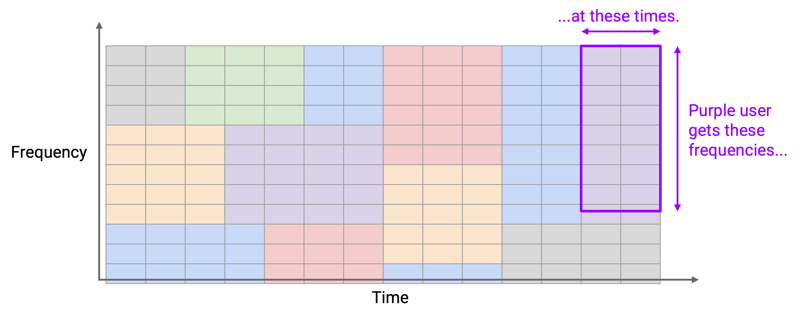
Each vertical cross-section represents one time slot, and shows you how the frequencies have been allocated to users in that cross-section. For example, in the first time slot, the blue user gets 3 frequency slots, the orange user gets 5 frequency slots, and the gray user gets 4 frequency slots.
Each horizontal cross-section represents one frequency, and shows you how that specific frequency is allocated to users over time. For example, the top row shows a frequency being allocated to gray, and later green, and later blue, and later red, and so on.
Notice that this model is sharing resources using reservations, not best-effort. A user can only send in a frequency and time that’s been allocated to them by the controller.
Radio controllers were traditionally installed in the tower or near the tower, though nowadays, there’s been work to move controllers into the cloud for easier maintenance and management.
Each operator runs many cellular towers, spaced out over the entire country, so that users can connect to a tower no matter where they are. The result is a Radio Access Network (RAN).
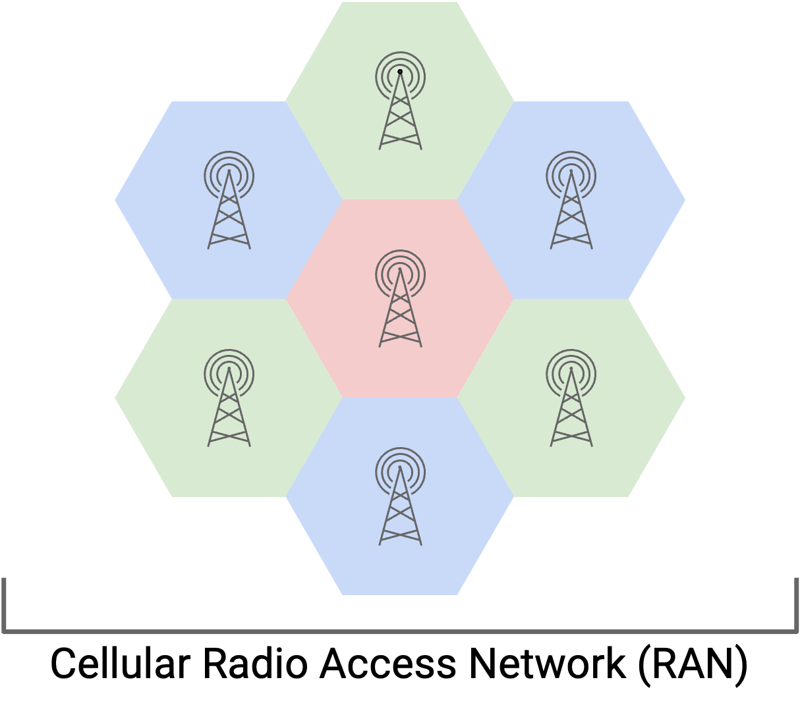
Typically, each tower gets its own set of frequencies that it can use, and frequencies are assigned such that neighboring towers get different frequency ranges. This ensures that neighboring towers don’t use the same frequencies and interfere with each other. In this picture, each color corresponds to one set of frequencies. It’s possible that two towers both use the blue set of frequencies, but they aren’t neighboring so they won’t interfere. Any neighboring towers are using non-overlapping frequencies. Note that frequencies are often allocated according to demand, so that a cell tower in downtown San Francisco gets more frequencies than a cell tower in the middle of nowhere.
Infrastructure Components: Cellular Core
A mobile user can now send data to a cell tower. The cell tower now needs to send that data to the rest of the Internet.
Each cell tower has a wired connection to the cellular core. You can think of the cellular core as the backend infrastructure of the cellular network (not user-facing).
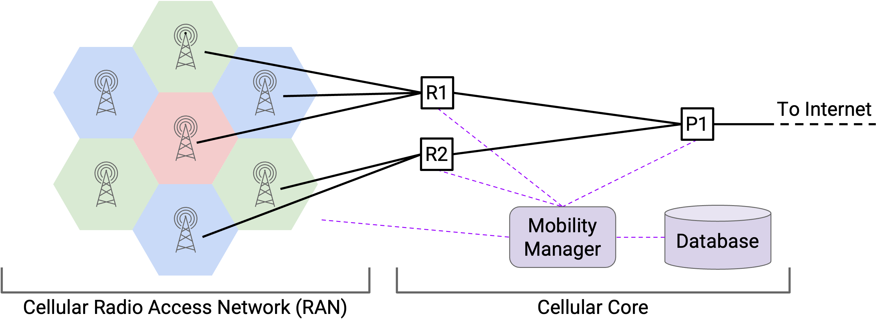
The cellular core contains some data-plane components. You can think of these like typical routers and switches that forward packets between the users (via towers) and the rest of the network. We’ll focus on two special types of routers in the cellular core.
The radio gateway is the boundary between the RAN (cell towers) and the cellular core. A cell tower forwards its data to one of these radio gateways. On the other end of the core, the packet gateway is the boundary between the cellular network and the rest of the Internet. Data from users eventually reaches the packet gateway and is sent out to the Internet as a standard TCP/IP packet.
The cellular core also contains some control-plane components. We didn’t have these in the traditional Internet. User traffic doesn’t reach these components. We’ll focus on two control-plane components.
The database stores information about customers, such as: What devices does the customer own? What data plan does the customer have? Where is the customer’s device right now (e.g. which tower is it connected to)?
The mobility manager is a controller (think of it like a CPU) that manages network functionality. The manager helps us authenticate a user (e.g. check if they’re really a Verizon customer). The manager also helps us update configurations as the user moves around.
To summarize the infrastructure: User devices send data to cell towers in the RAN. The cell tower forwards the data to the radio gateway (entering the core). The data eventually reaches the packet gateway and gets forwarded to the Internet (exiting the core). Also in the core are control components (mobility manager, database) to store and manage information about customers.
High-Level Steps of Cellular Operation
Step 0: Registration. The user registers for the cellular service. For example, you walk into a Verizon store and purchase a data plan and sign a contract. The operator now stores information about you and your service plan in the database.
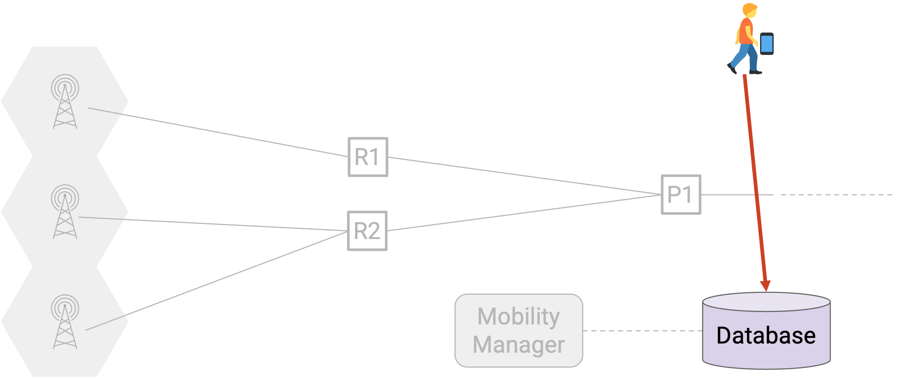
Step 1: Discovery. The user turns on their phone in the middle of nowhere. Their phone must discover which nearby towers are available, and must also pick a tower to use.
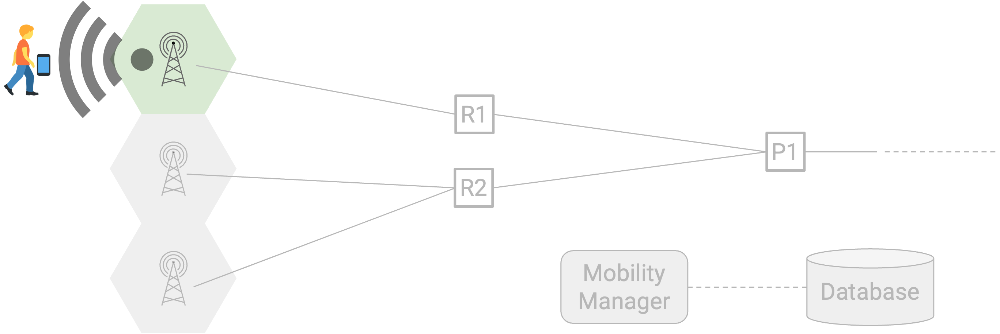
Step 2: Attachment. After picking a tower, the user’s device tells the tower that it wants to connect. The tower must ask the mobility manager if the connection is allowed (e.g. check if the user has exceeded their quota).
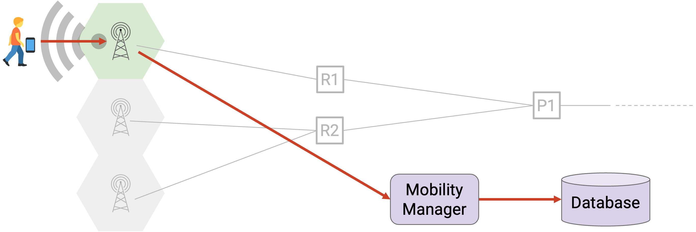
If the authentication checks out, then the mobility manager configures the tower and the routers to establish a path from the user to the Internet (via the tower and the routers).
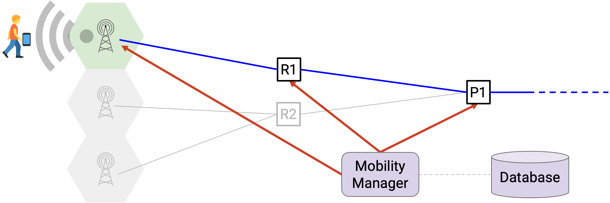
Step 3: Data exchange. The user can now send and receive data along the path configured.
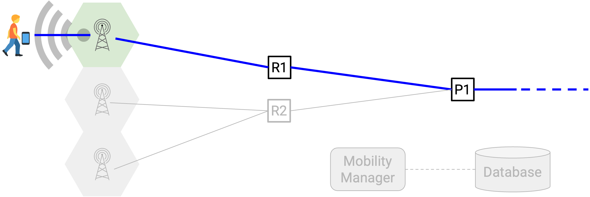
Step 4: Handover. As the user moves around, they might move away from their original tower, and closer to a new tower (in the same operator’s RAN). The old tower, new tower, and the user’s device all work together to decide if the user should switch towers.
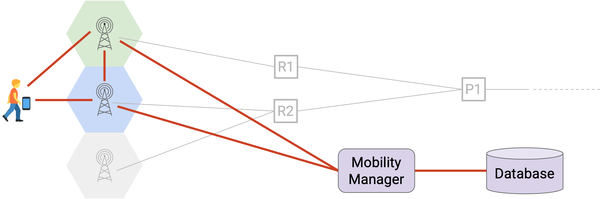
If everyone agrees that the user should switch towers, they tell the mobility manager, and the mobility manager re-configures the tower and the routers to establish a new path from the user to the Internet (now using the new tower, and possibly different routers too). This handoff must be seamless, which means the user could be sending and receiving data through the whole process, and shouldn’t be disrupted. Achieving such a seamless handoff requires the network to constantly babysit the user device.
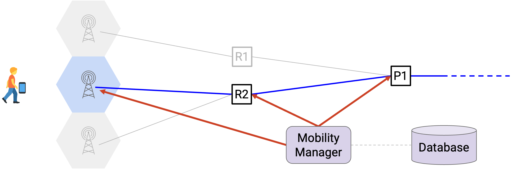
Steps 3 and 4 can repeat as the user moves around, and the best router to use keeps changing.
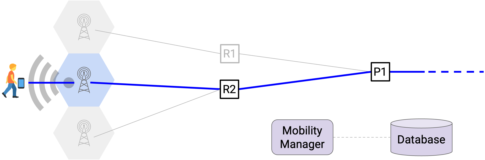
One final feature we need to implement is roaming. If the user goes to a different country like Germany, their operator (e.g. Verizon, US-based) might not have coverage in Germany. But, Verizon might sign a contract with Deutsche Telecom (an operator in Germany), to allow Verizon’s customers to use Deutsche Telecom’s infrastructure. This means that Deutsche Telecom might need to support not only its own users, but also users from other networks like Verizon.
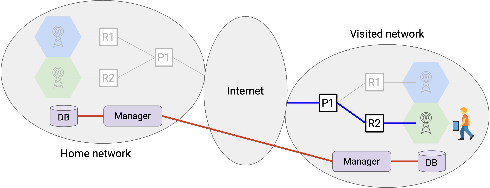
The steps of connecting in a visiting network (while roaming) are generally pretty similar, except the mobility managers in the visited network and the home network must also coordinate with each other (e.g. Deutsche Telecom checks with Verizon to see if the user paid for roaming).
Step 0: Registration
When you register for a data plan, you receive an IMSI (International Mobile Subscriber Identity), which is a unique identifier associated with your subscription. This number is securely stored in hardware in a SIM card.
Note: This is why operators like Verizon give you a SIM card to insert into your phone. If you switch phones, but stay on the same plan, you just have to transfer the SIM card into your new phone, and now your new phone is associated with the same IMSI number. Or, if you switch plans, but use the same phone, you put a new SIM card in your phone, and now that phone is associated with a new IMSI number.
The first 3 digits of the IMSI are the Mobile Country Code, identifying a country. The next 2-3 digits are the Mobile Network Code, representing your service provider (e.g. Verizon, AT&T). The remaining digits are the Mobile Subscriber Identification Number, which identifies a specific user within that service provider. The IMSI overall cannot exceed 15 digits.
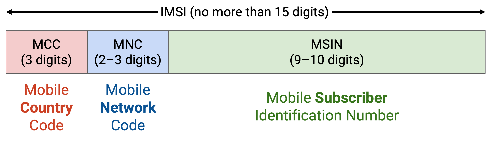
Note that the IMSI is not the same as an IP address. If you pay for a year-long data plan, you keep the same IMSI all year. But, each time you attach and connect to the network, you could get a different IP address.
There are two other identifiers used in cellular networks. They’re distinct from the IMSI, and we won’t cover them in a lot of detail. The IMEI (International Mobile Equipment Identity) uniquely identifies a physical device. The IMEI encodes the device manufacturer and model (“this is an iPhone 13”), and stays the same even if you change data plans. Or, if you have two phones covered by the same data plan, you’d have two IMEI numbers, but only a single IMSI.
The other identifier is your phone number. Again, this is distinct from the IMSI or IMEI, and the digits represent different things (e.g. your area code). The phone network will need to associate your phone number with a specific IMSI to determine your phone plan.
After you register and receive an IMSI, the operator (e.g. Verizon) stores your IMSI and information about your plan in the database.
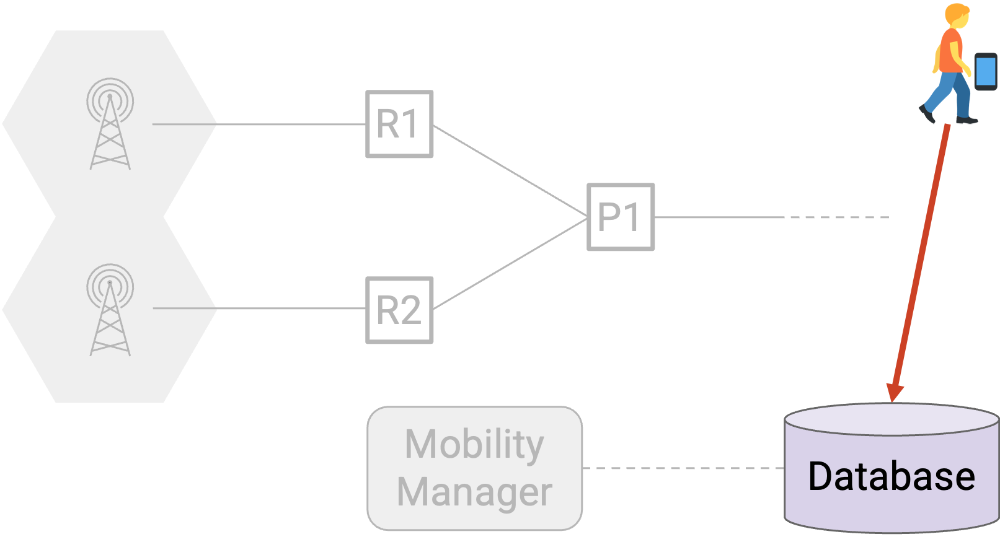
During registration, the user’s device (SIM card) and the operator (database) also agree on a shared secret key. This will be useful when we do attachment.
Step 1: Discovery
How does the user device discover which towers are in range, and owned by the user’s operator?
Each tower transmits periodic beacons (hello messages), telling everybody in range that the tower exists. The beacon message also includes the network operator (e.g. hello, I’m a Verizon tower), where the operator is identified by the 2-3 digit Mobile Network Code. Remember, the device’s IMSI (on the SIM card) also has a Mobile Network Code, so the device can check: My SIM card says I’m in network 220, and this tower’s beacon says it’s in network 220, so I can use this tower.
The beacon is transmitted on a specific frequency called the control channel, so that the beacon doesn’t interfere with data transmissions. Each frequency range has its own associated control channel. Recall that neighboring towers have non-overlapping frequency ranges, which also means they have different control channels (avoids interference).
The user’s device might hear many beacons. The user measures the signal strength to different towers, and picks the tower (belonging to its operator) with the best signal.
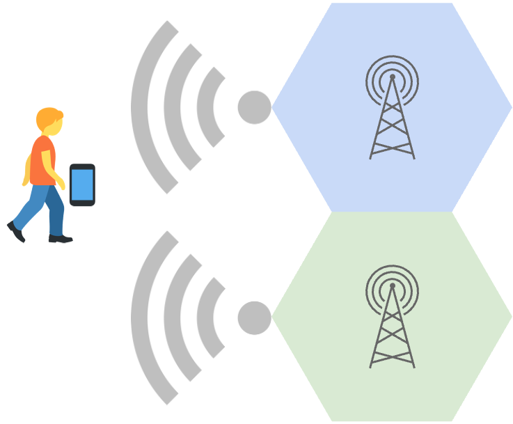
There’s one problem we have to solve. How does the user’s device know which control channel to listen to? The device needs to tune in to the control channel in order to pick up the beacons. We have a bootstrapping problem.
There are a few solutions to this problem. The device could just scan and try a bunch of frequencies (slow, but sometimes the only option). The operator might give the device a pre-configured list of control channels during registration. The device can also cache previously-used channels.
Note that scanning for subsequent towers after discovery is not necessary. During handovers, the old tower will tell users exactly which data frequency to use on the new tower. This is why handovers (order of 0.01–0.1 seconds) are much faster than scanning during discovery (order of 10–100 seconds).
Step 2: Attachment
-
Once a user has discovered a tower, it sends an attach request to that tower. The user includes its IMSI (subscriber ID) in the request.
-
The tower must then send the request to the mobility manager, which actually processes the request.
-
The manager looks up the IMSI in the database to learn the details about the user’s service plan. The manager also performs authentication cryptographic details omitted) by using the secret key known by the device and the manager (in its database).
If the authentication succeeds, we know the user is who they say they are. If the database lookup also shows that the user is eligible for service, then the manager approves the attach request.
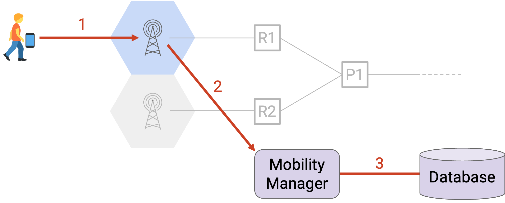
- After the attach request is approved, the mobility manager now has to configure the data plane to give the user connectivity. First, the manager assigns an IP address to the device. Then, the the manager configures the tower, telling the tower radio controller how many resources to allocate for this user. The manager also configures the tower and the routers to create a path between the device and the Internet. Finally, the manager initializes counters and shapers to keep track of the device’s Internet usage.
After setting up the user’s connectivity, the manager finishes by recording the user’s location information in the database. Specifically, the database maps the user’s IMSI to its IP address and the path it’s using (which tower, which gateways).
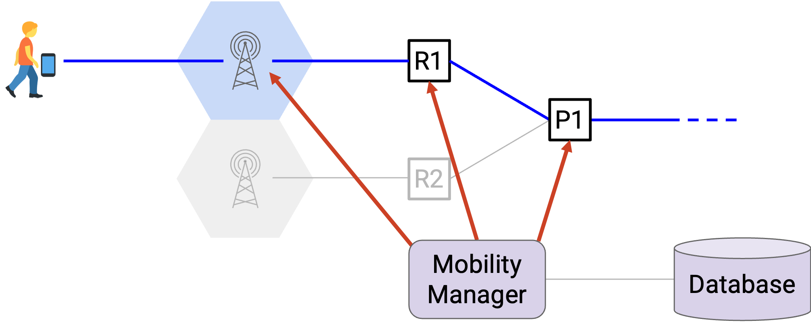
Note that the entire attachment process occurs over control channels. We haven’t assigned any frequencies to the user yet, so the user has to use dedicated control channels to communicate.
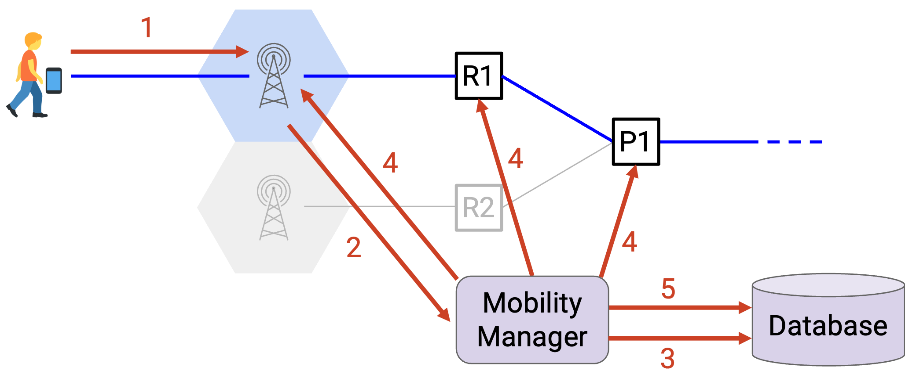
Step 3: Data Exchange
At this point, the network is configured so that the device can use its IP address to send and receive messages.
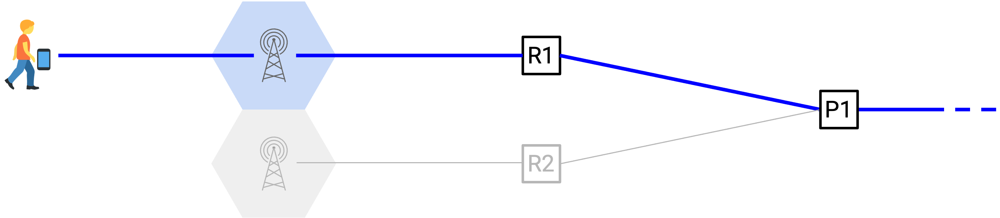
How does the cellular network (tower, radio gateway, tower gateway) know how to forward packets? Users are constantly moving, so if we ran a traditional routing algorithm like distance-vector, routes would never converge.
Instead, the manager will create a path between the device and the Internet using tunnels. Remember, the packet’s path is from the device, to the tower, to the radio gateway, to the packet gateway.
Conceptually, to implement the tunnel, we’ll tell the tower: If you get a packet from the user, send it this way (into the blue tunnel). On the other side of the wired link, the packets will exit the blue tunnel and arrive at the radio gateway. We’ll then tell the radio gateway: If you get a packet exiting the tunnel, send it this way (into the green tunnel). Packets then travel through the green tunnel and arrive at the packet gateway, who can forward the packet into the Internet.
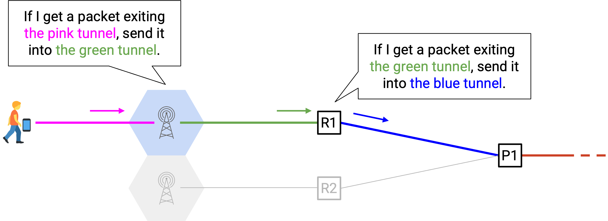
Incoming packets also travel through the tunnels. We tell the packet gateway: If you get a packet bound for User A, send it into the green tunnel (toward the radio gateway). We also tell the radio gateway: If you get a packet exiting the green tunnel, send it into the blue tunnel (toward the tower).
Notice that none of the network components are running a routing protocol to find paths. Instead, the manager is telling the routers how to forward packets. Each user will need their own set of tunnels, so the network is storing per-user state (e.g. one table entry for each connected user).
How do we actually implement these rules? For example, how does the radio gateway know when an incoming packet is coming out of the blue tunnel? We can use encapsulation. When entering a tunnel, we can add a new header, indicating that the packet is traveling through that tunnel (e.g. “this packet is traveling through the blue tunnel”). On the other end, when the packet exits the tunnel, the gateway looks at the extra header and knows which tunnel the packet came from. The gateway can then use this information to decide where to forward the packet next.
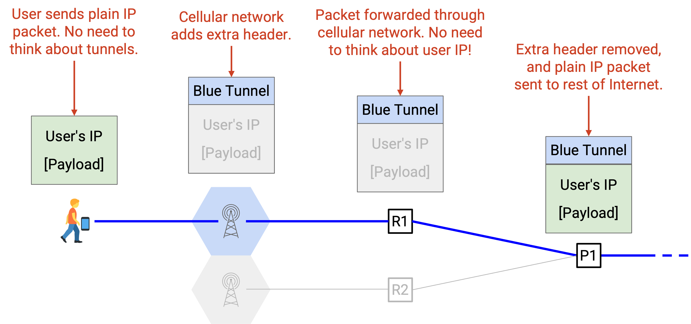
Notice that with tunnels and encapsulation, the routers are never forwarding based on the user’s IP. The user is always moving around, so we can’t use their IP to determine their location. Instead, we have to use these pre-configured tunnels to decide where to forward the packet.
Step 4: Handover
What happens if the user moves from one tower to another? Let’s look at a (slightly simplified) protocol. We’ll call the towers old and new, and move from the old tower to the new tower.
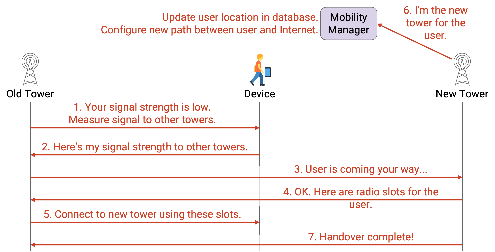
-
Your device is constantly measuring its signal strength to the old tower, and reporting that strength to the old tower. At some point, the old tower will say: Your signal strength is too low. Here are some nearby towers (owned by the same operator) and their corresponding control channel frequencies. Can you measure your signal strength to these nearby towers?
-
Your device measures the signal strength to the nearby towers, and reports those values to the old tower. The old tower will pick the best new tower, based on whatever policy the operator wants.
-
The old tower tells the new tower: The user is coming your way. This causes the new tower to allocate some frequency resources to the user.
-
The new tower tells the old tower which frequency resources have been allocated.
-
The old tower tells the user: Connect to the new tower, using these frequencies.
-
The new tower reports to the mobility manager: I am the new tower for the user. The manager updates its database with the user’s new location. The manager also updates the tunnels to create a new path between the user and the Internet (via a new tower, and also possibly via new radio and packet gateways).
-
Finally, the new tower tells the old tower that handover is complete.
Why was the handover process so complicated? Remember, we want to give the user seamless communication, with no interruption as they move between towers. This requires cooperation between the user, the old and new towers, the mobility manager, and the gateways.
Seamless communication is difficult because the handover process is not atomic. The user is still sending and receiving data while the handover is ongoing. For example, outside servers replying to the user might have sent a bunch of incoming packets to the old tower. During the handoff, the old tower continues to buffer any data it receives for that user. After the handoff, the old tower can send that buffered data to the new tower, which forwards that data to the user. Notice that traditional TCP/IP networks didn’t need to buffer data like this. This type of buffering is a new feature added for seamless handovers as the user moves around.
Notice that the decisions in this handover process are always made by the operator. The device doesn’t get to choose the next tower to use. The benefit of this design is, it gives the operator more control. For example, if a tower is overloaded, the operator can load-balance and send the user to a different tower. Or, if some users are prioritized over others, the operator can send less-prioritized users to worse towers. The drawback of this design is, it’s a bit slower and requires more round-trips and more complexity.
Notice that the user’s IP address remains unchanged during the handoff. We just updated the tunnels so that packets destined for the user’s IP go through a different path.
Handovers are complicated and require updating the per-user state in the network. If the number of users increases, or users move around really quickly, this protocol encounters scaling challenges. And yet, the modern cellular network works pretty well at scale, because so much work has gone into optimizing these protocols. That’s why the standards specifications are often thousands of pages long!
Roaming
Recall that a user can roam and connect to a different network if they’re visiting another country (or any place where their own operator doesn’t have coverage).
The connection process (discovery, attachment, handover) in a visiting network is generally pretty similar to connecting in the home network. The main difference is, the mobility manager in the visitor network must communicate back to the mobility manager in the home network.
For example, the visitor needs to ask the home for help in authenticating the user (check if the user has paid for roaming). Also, the visitor needs to send tracking data back to the home network, so that the home network knows the user’s location.
How does the visitor know where the home network is? Remember, during attachment, the device presents its IMSI, and the IMSI contains a Mobile Network Code which identifies the user’s operator.
There are two different approaches to set up tunnels between the user and the Internet.
In the home routing approach, traffic is tunneled through the home network’s packet gateway. This means that all packets must travel from the visiting network back to the home network, before getting forwarded to the wider Internet. This is beneficial because it lets the home network’s packet gateway can track the user. One drawback is, if you’re a USA-based user, you roam in Germany, and you want to access a website in Germany, your packet must travel from Germany, back to the USA gateway, and then back to Germany.
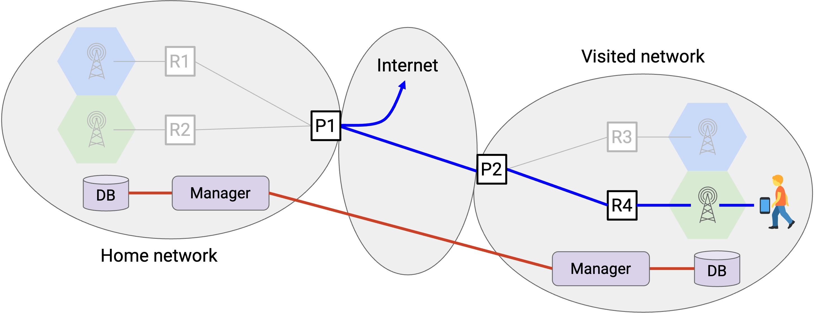
In the local breakout approach, traffic is tunneled through the visiting network’s packet gateway. This can shorten the route between the user and the Internet, since packets don’t have to travel all the way back to the home network first. However, this can make accounting for the user’s usage more complicated, since the roaming network must now do the accounting and send the data back to the home network.
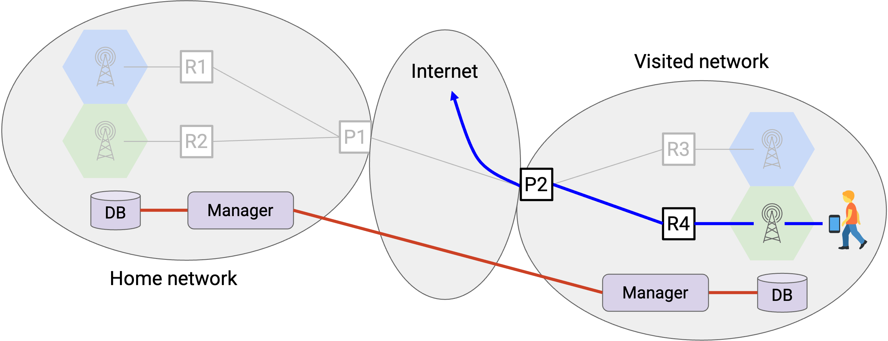
Additional Operations
We’ve seen some of the key operations in cellular networks, but other operations exist as well.
Lawful intercept is a legal requirement for all cellular operators. This allows a government with a search warrant to wiretap your connection and listen to the packets you’re sending.
Stolen phone registries allow a user to report their phone as stolen. Then, if the thief tries to connect your stolen phone to the network, the operator (manager and database) notice that the phone is stolen, and can try to track down the phone. Here, the operator uses the IMEI (the ID number hard-coded into your phone) to identify the specific phone (regardless of the IMSI, the subscriber ID). Devices need to report their IMEI when they connect, allowing the operator to check if the phone is stolen.
These additional operations are possible because the operator has centralized control, keeping track of all the users and their locations.
Cellular Network Design Reflections
As we noted earlier, cellular networks have different fundamental goals and design choices, compared to the traditional Internet. For example, we saw that authentication and accounting are central goals of the cellular network, even though these were not goals in the traditional Internet. We also saw that allocation is based on reservations, and the network maintains per-user state that is dynamically changing.
Using stateful reservation-based networks increased the complexity of our network. The various components had to constantly reconfigure tunnels as the user moved around.
Let’s think about some possible alternate designs. Recall that handover was complicated because we wanted the user to keep the same IP address as they moved around. What if we instead changed the user’s IP address on each handover? Now, the IP addresses actually reflect the user’s location, and we could use traditional routing protocols again. However, higher-level protocols like TCP and HTTP will break. Remember, TCP relies on the two connecting users keep the same IP address.
Using the same IP address increases complexity, but changing IP addresses breaks TCP. One possible solution is to use a different transport-level protocol that allows changing IP addresses, like QUIC (developed at Google). Then, even though the IP addresses are changing, we can use the flow label field in the IPv6 header to label all the packets in a flow.